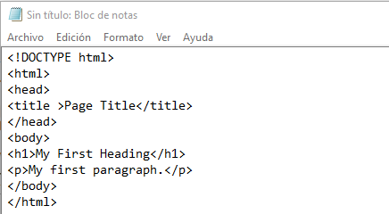
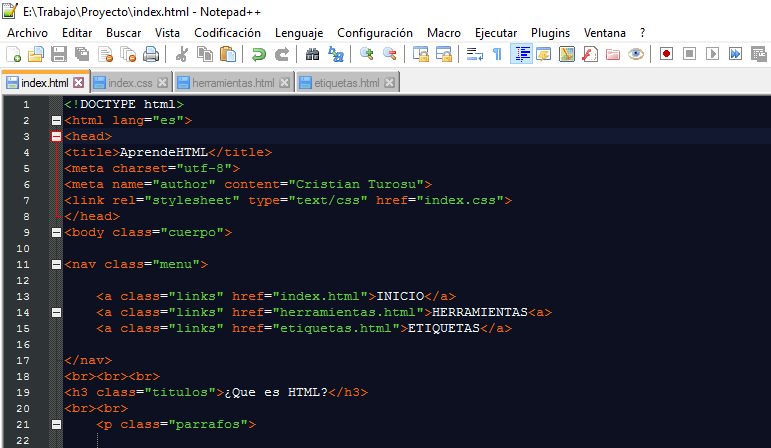

Editores de html
Bloc de Notas: es un editor de texto muy sencillo, en el cual es recomendado empezar en html.

NotePad++: es un editor de texto un poco mas complejo, pero mas visual, ya que te pone las etiquetas en colores y tambien tiene plugins para subir lo que haces directamente a github, etc..
